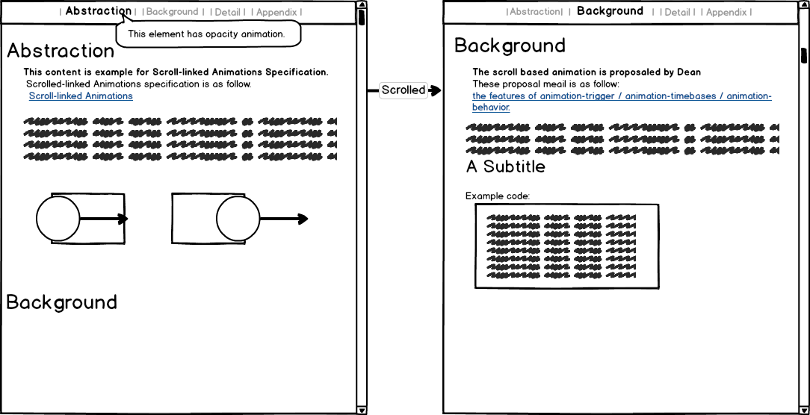
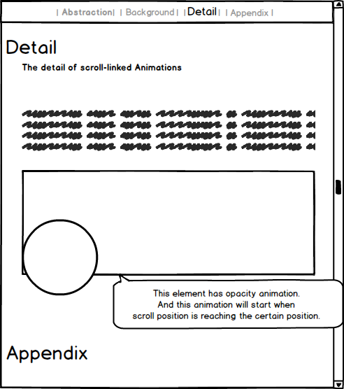
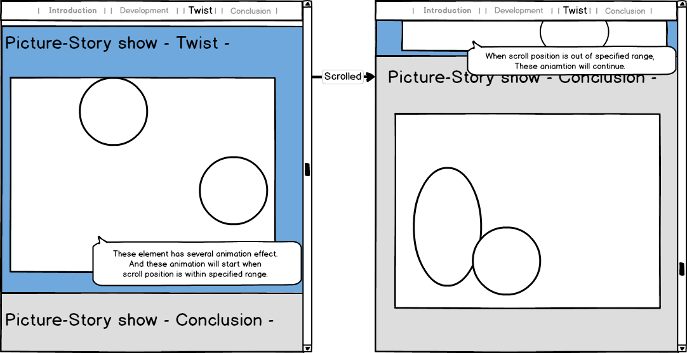

1. Introduction
This specification defines mechanisms for triggering the start and end of a web animation based on the scroll progress of a scroll container, as well as driving the progress of an animation based on the scroll progress of a scroll container.
1.1. Relationship to other specifications
Web Animations [WEB-ANIMATIONS-1] defines an abstract conceptual model for animations on the Web platform, with elements of the model including animations and their timelines, and associated programming interfaces.
Scroll-linked Animations extends this model in two ways: by defining a new concept, that of an animation timeline trigger, which can optionally be associated with an animation timeline; and by defining a new type of animation timeline: a scroll timeline.
This specification defines both programming interfaces for interacting with these concepts, as well as CSS markup.
2. Use cases
2.1. ScrollTimeline
Here’s an example of scrollable page contents including the animated element. This animated element is indicated the navigation of content. For example, If we scrolled to the half of page, then animation of navigation will advance to 50%.Usually we should detect the scroll event from DOM, and then manipulate the animation via Web Animations API or CSS.

If we use this API in this case, the example code is as follow.
var animation = div.getAnimations()[0]; animation.timeline = new ScrollTimeline( { trigger: new ScrollTrigger({ scrollSource: scrollableElement, scrollOffset: 'auto', endScrollOffset: 'auto' })});
2.2. DocumentTimeline with ScrollTringger
The animations will use the document timeline, but some people will want to trigger these animation when reaching certain position in the content.This use case is as follow:
Here’s an sample content including the animation. This animation will start when reaching the 300px, this value is that user can view this animation’s element.

If we use this API for this case, the example code will be as follow:
var animation = div.getAnimations()[0]; animation.timeline = new DocumentTimeline( { trigger: new ScrollTrigger({ scrollSource: scrollableElement, scrollOffset: '300px' }) });
2.3. ScrollTimeline with scroll range
This use case is similar to ScrollTimeline. The difference is that there are scroll range in order to enable the animation. Once scroll position will be out of range, the animation will cancel.This use case is as follow:
Here’s an example content like picture-story show with animated element. The developer want to show the animated element when scroll position reach the certain position, and she want to cancel the animation when scroll position is out of range.(perhaps when we can’t see these element.)

If we use this API for this case, the example code will be as follow:
// We enable the animation within the range[300px-800px]. var animation = div.getAnimations()[0]; animation.timeline = new ScrollTimeline( { trigger: new ScrollTrigger({ scrollSource: scrollableElement, scrollOffset: '300px', endScrollOffset: '800px'}) });
2.4. ScrollTimeline with scroll range and interval
This use case is similar to ScrollTimeline with scroll range. The difference is behavior of out of range. Once scroll position is out of range, the animation will continue until animation is finish. But some animation have infinity duration, so we use the interval property of ScrollTrigger in such case.This use case is as follow:
Basically, this use case is same to the ScrollTimeline with scroll range. However developer will want to continue some animation’s effect.

If we use this API for this case, the example code will be as follow:
var animation = div.getAnimations()[0]; // We will animate this animation 1000ms after exceed range. animation.timeline = new DocumentTimeline( { trigger: new ScrollTrigger({ scrollSource: scrollableElement, scrollOffset: '300px', endScrollOffset: '800px', interval: '1000ms'}) });
3. Triggering animations
3.1. The AnimationTimelineTrigger interface
interface AnimationTimelineTrigger {
};
An animation timeline trigger is an object that can be in one of two states: active and inactive. A trigger starts off as inactive, and can subsequently be activated or deactivated by the user-agent depending on the specific type of trigger.
A trigger cannot be explicitly activated or deactivated from script, only by the user-agent.
3.2. Extensions to the AnimationTimeline interface
partial interface AnimationTimeline { readonly attribute AnimationTimelineTrigger? trigger; };
If a timeline has a specified trigger, the timeline is only activate when its trigger is active.
That is, a timeline with a trigger only becomes active when its trigger becomes active and all the other criteria for the timeline becoming active are met. When the trigger becomes inactive, the timeline becomes inactive as well.
3.3. Extensions to the DocumentTimeline interface
partial dictionary DocumentTimelineOptions { AnimationTimelineTrigger trigger; }; [Constructor(DocumentTimelineOptions options)] partial interface DocumentTimeline { // trigger attribute inherited from AnimationTimeline };
Need to add DocumentTimelineOptions to [WEB-ANIMATIONS-1]
3.4. Scroll Triggers
3.4.1. The ScrollDirection enumeration
enum ScrollDirection {
"horizontal",
"vertical"
};
The ScrollDirection enumeration specifies a direction of scroll of a
scrollable element.
-
horizontal -
Selects the horizontal direction
-
vertical -
Selects the vertical direction
Should this support logical directions, such as "block" and "inline", instead? As well?
3.4.2. The ScrollTriggerKind enumeration
enum ScrollTriggerKind {
"offset",
"range"
};
The ScrollTriggerKind enumeration specifies the kind of a ScrollTrigger.
-
offset -
The scroll trigger is activated when a scroll offset is reached, and never subsequently deactivated.
-
range -
The scroll trigger is active whenever the scroll offset is inside a particular range.
3.4.3. The ScrollTrigger interface
dictionary ScrollTriggerOptions { Element scrollSource; ScrollTriggerKind kind = "offset"; ScrollDirection orientation; DOMString scrollOffset = "auto"; DOMString endScrollOffset = "auto"; }; [Constructor(ScrollTriggerOptions options)] interface ScrollTrigger : AnimationTimelineTrigger { readonly attribute Element scrollSource; readonly attribute ScrollTriggerKind kind; readonly attribute ScrollDirection orientation; readonly attribute DOMString scrollOffset; readonly attribute DOMString endScrollOffset; };
ScrollTrigger is an AnimationTimelineTrigger associated with a scrollable
element.
-
scrollSource, of type Element, readonly
-
The scrollable element whose scrolling activates and deactivates the trigger.
-
kind, of type ScrollTriggerKind, readonly
-
Determines the way in which scrolling
scrollSourceactivates and deactivates the trigger.The values have the following behaviour:
-
offset
-
The trigger is activated when
scrollSource's scroll offset inorientationreachesscrollOffset, and never subsequently deactivated.endScrollOffsetis ignored. -
range
-
The trigger is activated when
scrollSource's scroll offset inorientationenters the interval [scrollOffset,endScrollOffset], and deactivated when the scroll offset exits that interval.
-
-
orientation, of type ScrollDirection, readonly
-
Determines the direction of scrolling which drives the activation and deactivation of the trigger.
If a value for
orientationis not specified, andscrollSourceis only scrollable in one direction, that direction is used; ifscrollSourceis scrollable in both directions, an unspecified direction is used. -
scrollOffset, of type DOMString, readonly
-
The scroll offset, in the direction specified by
orientation, that triggers activation of the trigger.Recognized values are defined by the following grammar:
auto | <length> | <percentage>
The meaning of each value is as follows:
-
auto
-
The beginning of
scrollSource's scroll range inorientation. -
An absolute distance along
scrollSource's scroll range inorientation. -
A percentage distance along
scrollSource's scroll range inorientation.
The way in which the trigger’s activation depends on this offset is determined by the trigger’s
kind. -
-
endScrollOffset, of type DOMString, readonly
-
A scroll offset that constitutes the end of a range in which the trigger is activated.
Recognized values are defined by the following grammar:
auto | <length> | <percentage>
The meaning of each value is as follows:
-
auto
-
The end of
scrollSource's scroll range inorientation. -
An absolute distance along
scrollSource's scroll range inorientation. -
A percentage distance along
scrollSource's scroll range inorientation.
-
3.5. The scroll-container-name property
| Name: | scroll-container-name |
|---|---|
| Value: | [ none | <custom-ident> ] |
| Initial: | none |
| Applies to: | scroll containers |
| Inherited: | none |
| Percentages: | N/A |
| Media: | interactive |
| Computed value: | As specified |
| Canonical order: | per grammar |
| Animatable: | no |
The scroll-container-name property defines a custom identifier for a scroll container, which allows the scroll container to be referred to by the animation-trigger property (and possibly other properties in the future).
Each scroll-container-name value in a document should be unique; if multiple scroll containers in a document have the same scroll-container-name, references to that name resolve to an unspecified one of them.
3.6. The animation-trigger property
| Name: | animation-trigger |
|---|---|
| Value: | <single-animation-trigger># |
| Initial: | auto |
| Applies to: | all elements, ::before and ::after pseudo-elements |
| Inherited: | none |
| Percentages: | N/A |
| Media: | interactive |
| Computed value: | As specified |
| Canonical order: | per grammar |
| Animatable: | no |
<single-animation-trigger> = auto | <scroll-trigger>
<scroll-trigger> = scroll(<custom-ident>, <scroll-direction> [, <scroll-offset> [, <scroll-offset>]])
<scroll-direction> = auto | horizontal | vertical
<scroll-offset> = <length> | <percentage> | auto
The animation-trigger property is similar to properties like animation-duration and animation-timing-function in that it can have one or more values, each one imparting additional behaviour to a corresponding animation on the element, with the triggers matched up with animations as described here.
Each value has type <single-animation-trigger>, whose possible values have the following effects:
-
auto
-
The animation’s timeline has a
ScrollTrigger.The trigger’s
scrollSourceis the scroll container whose scroll-container-name matches the provided <custom-ident>.The trigger’s
orientationis determined by the provided <scroll-direction>.The first <scroll-offset>, if provided, determines the trigger’s
scrollOffset.The second <scroll-offset>, if provided, determines the trigger’s
endScrollOffset.
3.7. @trigger rules
The @trigger at-rule allows conditioning the application of CSS rules on the scroll progress of a scroll container. It is defined as follows:
@trigger = @trigger <scroll-trigger> { <rule-list> }
The <scroll-trigger> defines a ScrollTrigger, in a similar fashion to when it appears
as a value for animation-trigger.
The <rule-list> inside of @trigger can contain any rules. The rules in the <rule-list> only apply when the ScrollTrigger is active.
As a special case, if one of the rules in the <rule-list> defines an animation using the animation-name property, the timeline of that animation is associated with the ScrollTrigger,
as if using the animation-trigger property.
The syntax is designed to be extensible to other types of triggers in the future.
Do we need animation-trigger at all, or is @trigger sufficient?
3.8. Examples
let spinner = document.getElementById("spinner"); let effect = new KeyframeEffect( spinner, [ { transform: 'rotate(0)' }, { transform: 'rotate(1turn)' } ], { duration: 300, fill: 'both', easing: 'linear' }); let timeline = new DocumentTimeline({ trigger: new ScrollTrigger({ scrollSource: document.documentElement, orientation: "vertical", kind: "range", scrollOffset: "500px", endScrollOffset: "1000px" }); }); let animation = new Animation(effect, timeline); animation.play();
@keyframes spin { from { transform: rotate(0); } to { transform: rotate(1turn); } } html { scroll-container-name: root; } #spinner { animation-name: spin; animation-duration: 300ms; animation-fill-mode: both; animation-iteration-count: infinite; animation-timing-function: linear; animation-trigger: scroll(root, vertical, 500px, 1000px); }
@keyframes spin { from { transform: rotate(0); } to { transform: rotate(1turn); } } html { scroll-container-name: root; } @trigger scroll(root, vertical, 500px, 1000px) { #spinner { animation-name: spin; animation-duration: 300ms; animation-fill-mode: both; animation-iteration-count: infinite; animation-timing-function: linear; } }
4. Controlling animation playback
4.1. The ScrollTimeline interface
enum ScrollTimelineAutoKeyword { "auto" }; dictionary ScrollTimelineOptions { (double or ScrollTimelineAutoKeyword) timeRange = "auto"; FillMode fill = "none"; }; [Constructor(ScrollTimelineOptions options)] interface ScrollTimeline : AnimationTimeline { attribute (double or ScrollTimelineAutoKeyword) timeRange; attribute FillMode fill; };
A scroll timeline is an AnimationTimeline whose time values are determined
not by wall-clock time, but by the progress of scrolling in a scroll container.
A ScrollTimeline must have a trigger, it must be of type ScrollTrigger, and the trigger’s kind must be range.
The scroll container whose scrolling drives the timeline is the trigger’s scrollSource. The direction of scroling that drives the timeline is the
trigger’s orientation.
-
timeRange, of type
(double or ScrollTimelineAutoKeyword) -
A time duration that allows mapping between a distance scrolled, and quantities specified in time units, such as animation-duration and animation-delay.
Does not have a correspondence to wall-clock time.
This is used to compute the timeline’s effective time range, and the mapping is then defined by mapping the scroll distance from
trigger.scrollOffsettotrigger.endScrollOffset, to the effective time range. -
fill, of type FillMode
-
Determines whether the timeline is active even when the scroll offset is outside the range defined by [
scrollOffset,endScrollOffset].Possible values are:
-
none
-
The timeline is inactive when the scroll offset is less than
scrollOffsetor greater thanendScrollOffset. -
forwards
-
When the scroll offset is less than
scrollOffset, the timeline’s current time is 0. When the scroll offset is greater thanendScrollOffset, the timeline is inactive. -
backwards
-
When the scroll offset is less than
scrollOffset, the timeline is inactive. When the scroll offset is greater thanendScrollOffset, the timeline’s current time is its effective time range. -
both
-
When the scroll offset is less than
scrollOffset, the timeline’s current time is 0. When the scroll offset is greater thanendScrollOffset, the timeline’s current time is its effective time range. -
auto
-
Behaves the same as
none.
A
ScrollTriggeris only active when the scroll offset is within the range, and a timeline is inactive when its trigger is inactive. How can we reconcile this will fill modes, which require an active timeline outside the range in some situations? -
4.1.1. The effective time range of a ScrollTimeline
The effective time range of a ScrollTimeline is calculated as follows:
-
If the
timeRangehas the value"auto", -
The effective time range is the maximum value of the target effect end of all animations directly associated with this timeline.
If any animation directly associated with the timeline has a target effect end of infinity, the behaviour is unspecified.
-
Otherwise,
-
The effective time range is the
ScrollTimeline'stimeRange.
4.1.2. The current time of a ScrollTimeline
The current time of a ScrollTimeline is calculated
as follows:
-
Let current scroll offset be the current scroll offset of
scrollSourcein the direction specified byorientation. -
If current scroll offset is less than
scrollOffset, return an unresolved time value iffillisnoneorbackwards, or 0 otherwise. -
If current scroll offset is greater than or equal to
endScrollOffset, return an unresolved time value iffillisnoneorforwards, or the effective time range otherwise. -
Return the result of evaluating the following expression:
(current scroll offset -scrollOffset) / (endScrollOffset-scrollOffset) × effective time range
4.2. The animation-timeline property
| Name: | animation-timeline |
|---|---|
| Value: | <single-animation-timeline># |
| Initial: | auto |
| Applies to: | all elements, ::before and ::after pseudo-elements |
| Inherited: | none |
| Percentages: | N/A |
| Media: | interactive |
| Computed value: | As specified |
| Canonical order: | per grammar |
| Animatable: | no |
<single-animation-timeline> = auto | scroll([<time> [, <single-animation-fill-mode>]])
The animation-timeline property is similar to properties like animation-duration and animation-timing-function in that it can have one or more values, each one imparting additional behaviour to a corresponding animation on the element, with the timelines matched up with animations as described here.
Each value has type <single-animation-timeline>, whose possible values have the following effects:
-
auto
-
The animation’s timeline is a
DocumentTimeline(possibly with atrigger) specified using animation-trigger. -
scroll([<time> [, <single-animation-fill-mode>]])
-
The animation’s timeline is a
ScrollTimeline.The <time> value, if specified, determines the timeline’s
timeRange.The <single-animation-fill-mode> value, if specified, determines the timeline’s
fill.The animation’s timeline must also have a
ScrollTrigger, defined using the JS API or using the animation-trigger property.
4.3. Examples
#progress { position: fixed; top: 0; width: 0; height: 2px; background-color: red; }
let progress = document.getElementById("progress"); let effect = new KeyframeEffect( progress, [ { width: "0vw" }, { width: "100vw" } ], { duration: 1000, easing: "linear" }); let timeline = new ScrollTimeline({ trigger: new ScrollTrigger({ scrollSource: document.documentElement, orientation: "vertical", kind: "range" }) }); let animation = new Animation(effect, timeline); animation.play();
@keyframes progress { from { width: 0vw; } to { width: 100vw; } } html { scroll-container-name: root; } #progress { position: fixed; top: 0; width: 0; height: 2px; background-color: red; animation-name: progress; animation-duration: 1s; animation-timing-function: linear; animation-trigger: scroll(root, vertical); animation-timeline: scroll(); }
@keyframes progress { from { width: 0vw; } to { width: 100vw; } } html { scroll-container-name: root; } #progress { position: fixed; top: 0; width: 0; height: 2px; background-color: red; } @trigger scroll(root, vertical) { #progress { animation-name: progress; animation-duration: 1s; animation-timing-function: linear; animation-timeline: scroll(); } }
5. Avoiding cycles with layout
The ability for scrolling to drive the progress of an animation, gives rise to the possibility of layout cycles, where a change to a scroll offset causes an animation’s effect to update, which in turn causes a new change to the scroll offset.
To avoid such cycles, animations with a ScrollTimeline are sampled once
per frame, after scrolling in response to input events has taken place, but
before requestAnimationFrame() callbacks are run. If the sampling of such an
animation causes a change to a scroll offset, the animation will not be
re-sampled to reflect the new offset until the next frame.
The implication of this is that in some situations, in a given frame, the rendered scroll offset of a scroll container may not be consistent with the state of an animation driven by scrolling that scroll container. However, this will only occur in situations where the animation’s effect changes the scroll offset of that same scroll container (in other words, in situations where the animation’s author is asking for trobule). In normal situations, including - importantly - when scrolling happens in response to input events, the rendered scroll offset and the state of scroll-driven animations will be consistent in each frame.